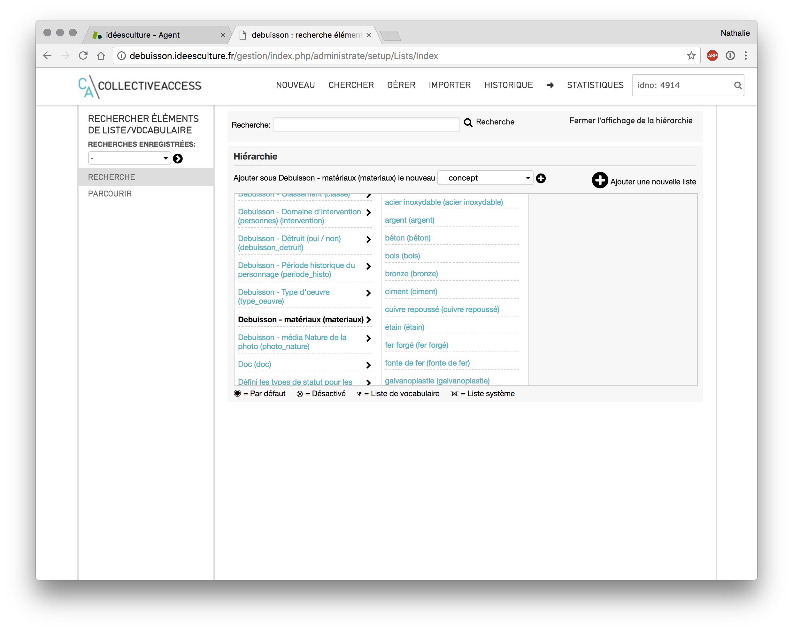
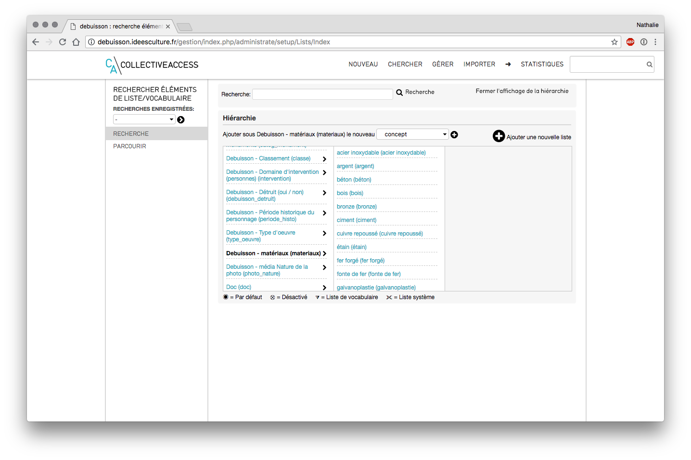
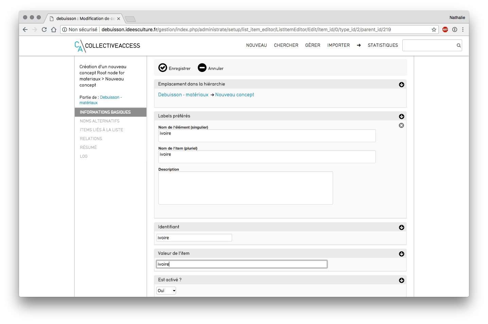
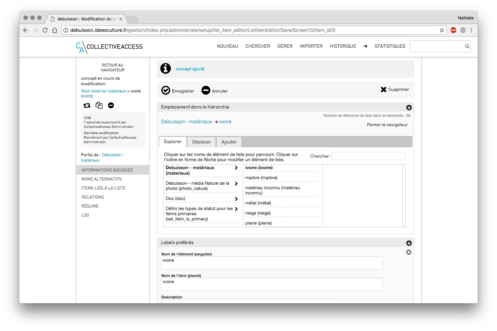

CollectiveAccess -Paramétrage des listes de vocabulaire¶
Menu Gérer > Listes et vocabulaires - visualisation de toutes les listes  Visualisation des listes
Créer une nouvelle liste :¶
- cliquer sur le +, intitulé « ajouter une nouvelle liste »
- saisir un code unique
- saisir un nom de liste (titre, libellés préférés)
- liste hiérarchique : cocher oui si c'est le cas
- liste système ? possibilité notamment d'attribuer des droits d'accès spécifiques sur ces listes
- utiliser cette liste en tant que vocabulaire : les termes de listes sont alors considérés comme un type d'enregistrement particulier et apparaissent sous forme de lien sur Pawtucket (interface publique)
- cliquer sur "enregistrer"
ajouter un nouveau terme à une liste existante :¶

liste concernée
- retrouver la liste (ex : "matériaux")
- la rechercher dans le menu déroulant
- ctrl+F "nom de la liste" pour la retrouver plus vite
- cliquer sur la flèche à droite de la liste
- cliquer sur le + à côté "ajouter un concept"

Ajouter un terme
- saisir le nom du concept à ajouter (ex ivoire) au singulier et au pluriel
- saisir un code (ex ivoire)
- déterminez s'il s'agit d'un terme par défaut au sein de la liste.
 Paramètres du concept
Paramètres du concept
Modifier un terme existant¶
- cliquer sur le concept à modifier (ex ivoire)
- apporter les modifications, et cliquer sur « Enregistrer » .  Modification d'un terme existant
Supprimer ou fusionner un terme¶
- cliquer sur le concept à supprimer ()
- cliquer sur le bouton supprimer
- si le concept a des objets rattachés : CollectiveAccess propose de transférer ces références vers le concept à conserver
- si le concept n'a pas d'objets rattachés : possible de supprimer directement par un clic sur "supprimer"